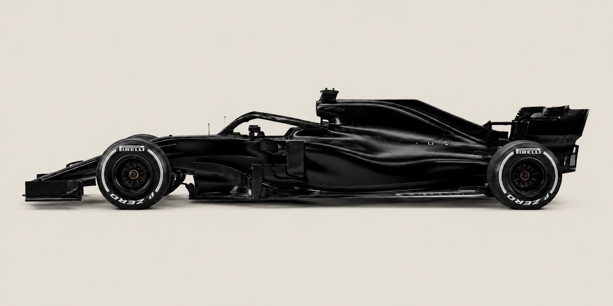

Java·Swing·JUnit
In Progress
F1 Season Tracker
An object oriented desktop application that tracks a full Formula 1 season race by race.
- Records race results and automatically updates driver and constructor standings
- Displays live championship progress through a built in GUI
- Uses persistence so season data carries over between sessions
- Built with systematic debugging and JUnit testing throughout development